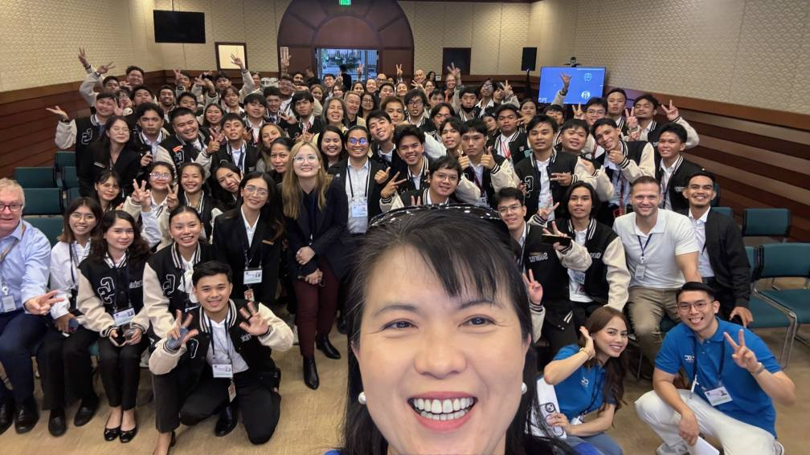
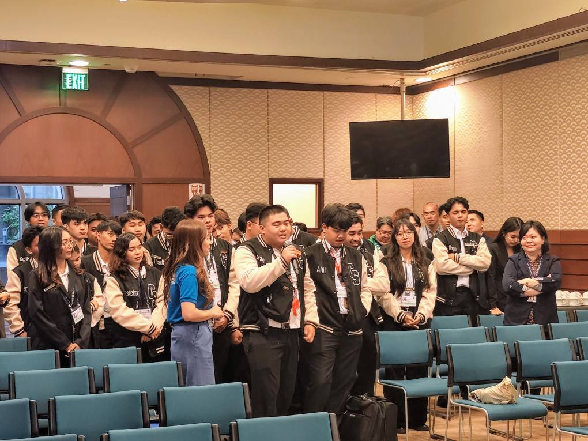
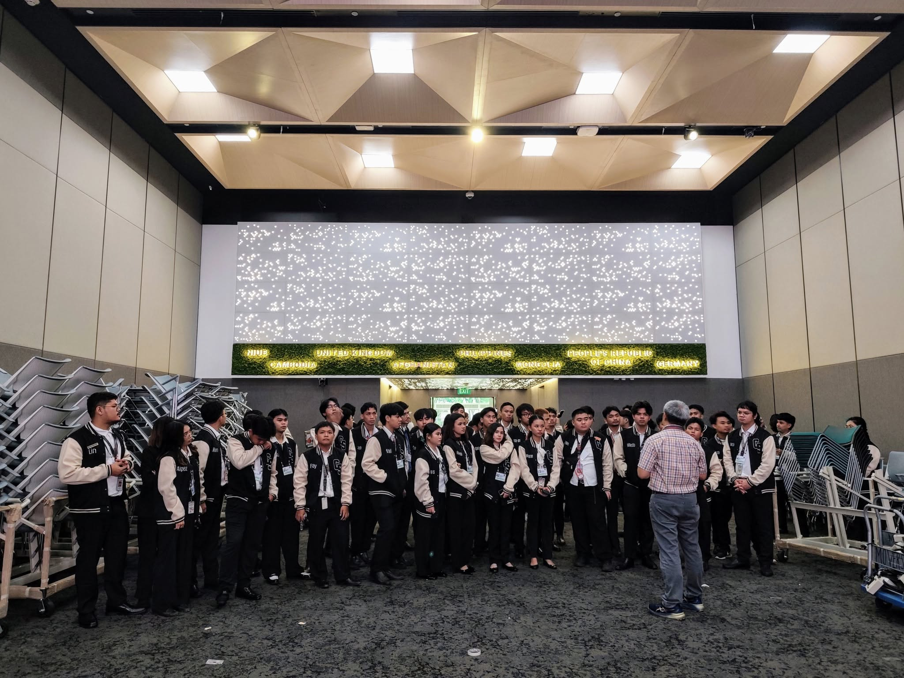
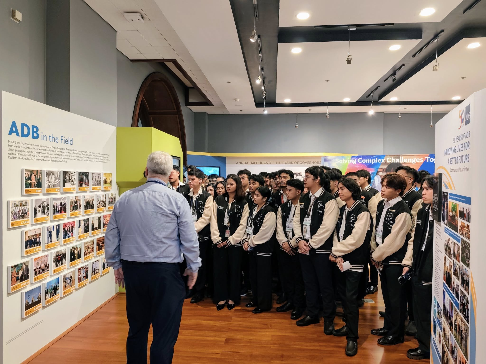
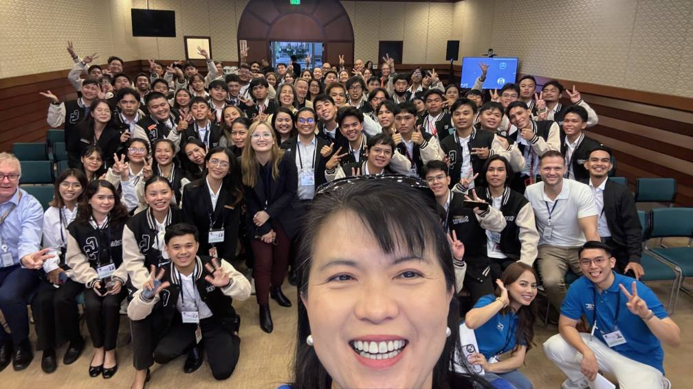
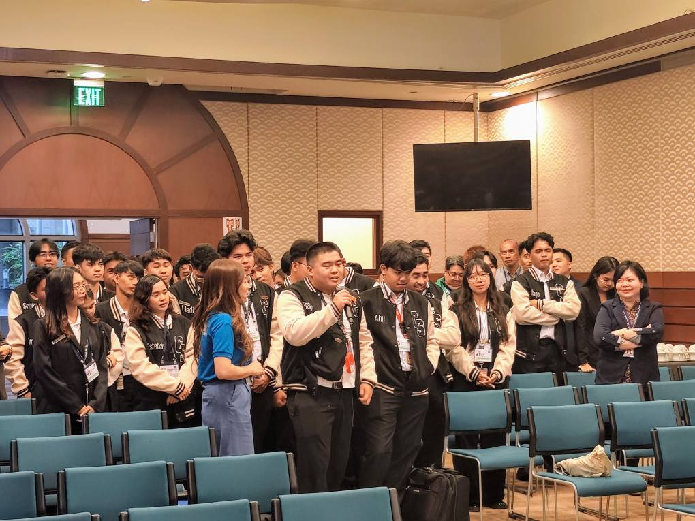
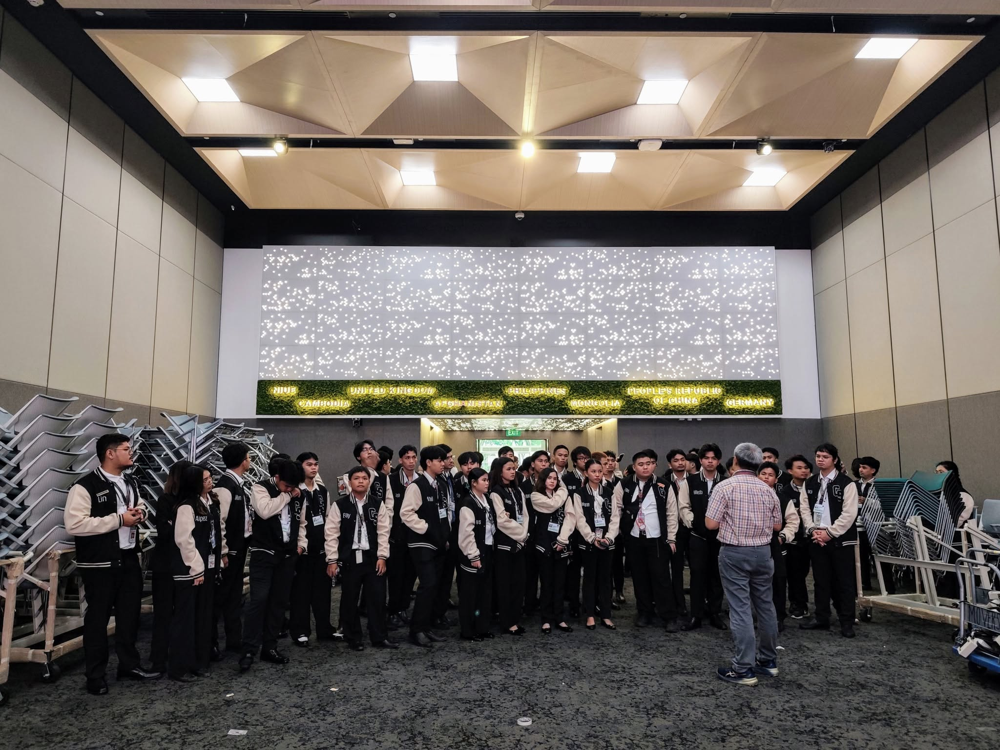
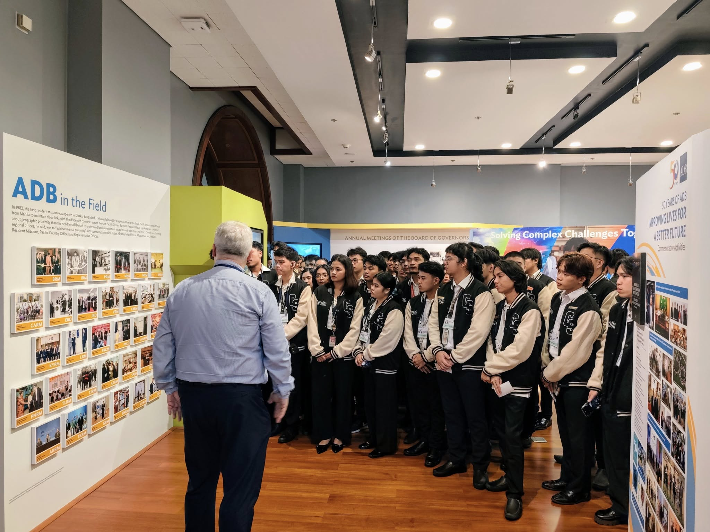

Inside ADB: A Global Impact
On June 11, 2025, we, the BSCS students from WMSU, visited the Asian Development Bank (ADB) in Mandaluyong City. This trip was organized with help from CXC and IBPAP, who are important partners in connecting schools with the tech industry.
We started with a tour of the ADB Library and History Gallery, where we saw how ADB has helped countries in Asia and the Pacific grow. Then, we went to the Function Hall, where important meetings happen. We learned that ADB helps countries by giving loans, offering advice, and supporting projects that make life better for people.
We also learned about CXC, a company that helps businesses find and manage workers. They explained how they help with hiring and making sure rules are followed.
My Personal Insights
Visiting ADB was really eye-opening! It showed me how technology is used in a big way to help countries develop. As a Frontend Developer and UI Designer, I thought about how important it is to handle huge amounts of data safely and make it easy for people to understand.
It was cool to see how my tech skills could actually help make a difference in the world, like helping with projects that improve people's lives. This visit definitely made me think bigger about my career.
What This Tour Mean To Us
This trip helped us gain important knowledge about the industry and see how IT is used in real development work. We also learned about possible job paths in big international organizations.
It was truly eye-opening and made us excited about how we can use our skills to make a positive impact in the world. WMSU is really helping us get ready for the future!
Moments From Our Visits
 






